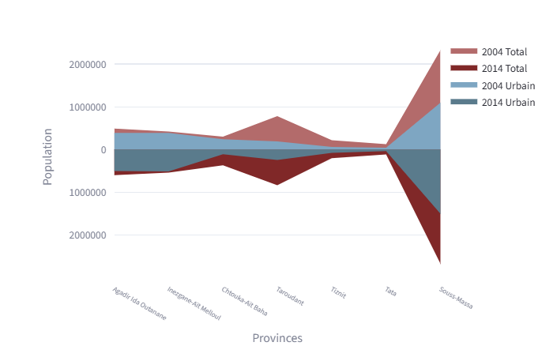
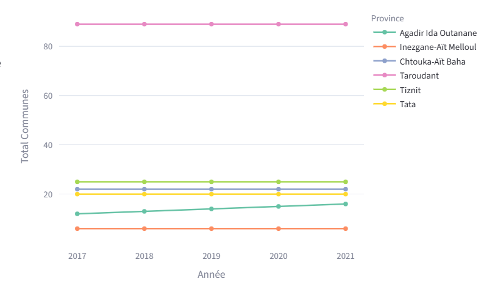
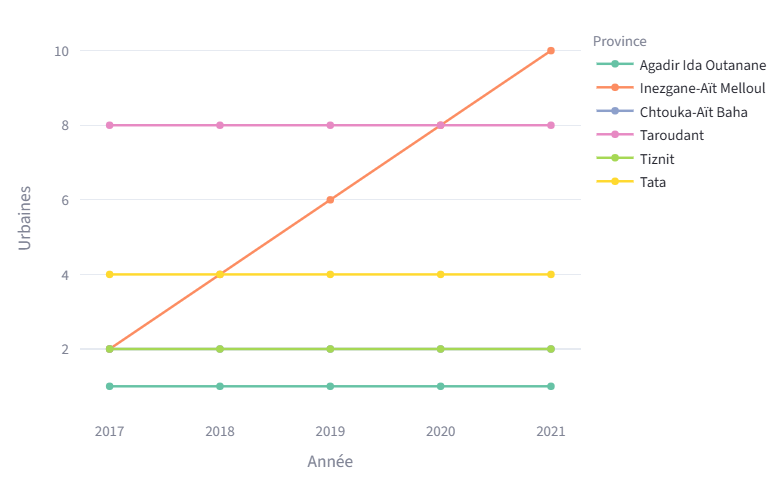
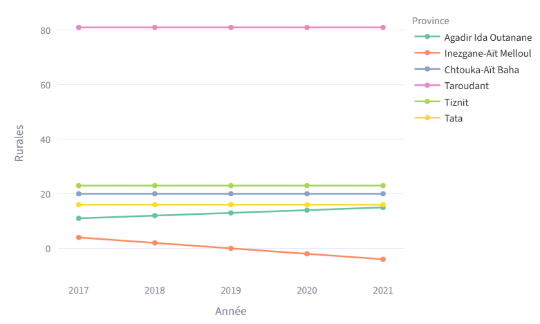
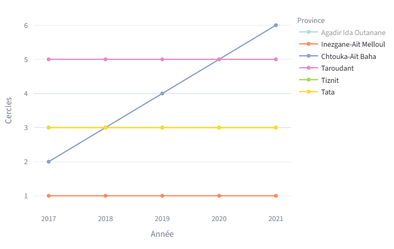
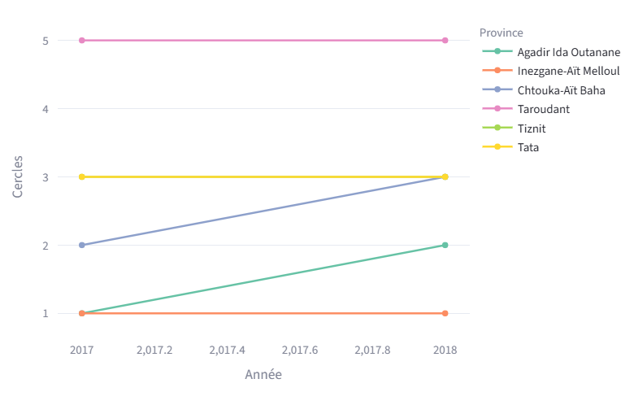
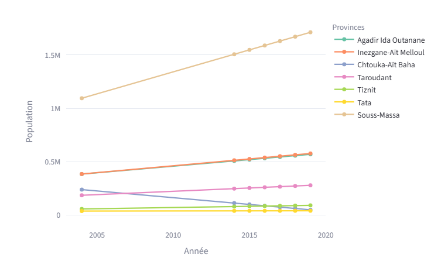
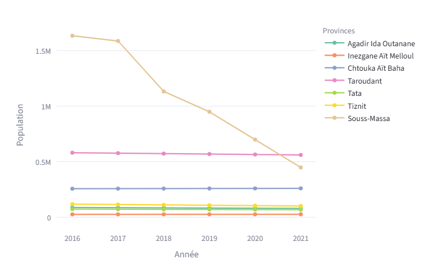
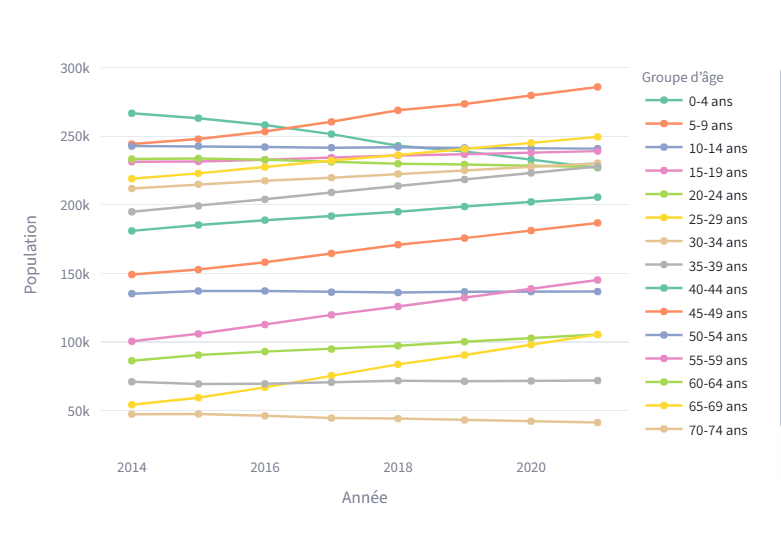
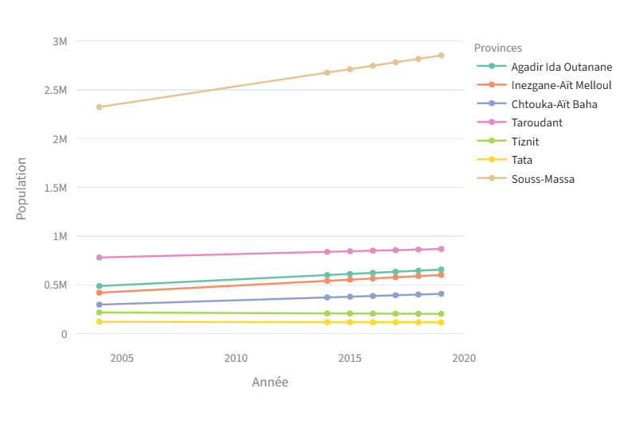

Axiora Data — Analyse, Visualisation & Prévision des Indicateurs Socio-Économiques
Table des matières
- Introduction
- Aperçu de la plateforme
- Données & préparation
- Sources des données (HCP)
- Structure des données
- Nettoyage & validation
- Construction des datasets par module
- Navigation & UI
- Menu principal
- Accordéon “Exploration des Indices”
- Filtres & contrôles interactifs
- Composants UI réutilisables
- Exploration des Indices
- Population & Dynamique Démographique
- Marché du travail & Disparités
- Habitat & Infrastructure
- Finance & Économie locale
- Enseignement & Capital Humain
- Cartes géographiques
- Prévision & Machine Learning
- Objectifs des prévisions
- Modèle utilisé (Régression linéaire)
- Pipeline de prévision
- Visualisation des prédictions
- Extensions possibles
- Assistant IA (Chatbot)
- Générateur automatique de rapports
- Installation & exécution
- Résultats & points forts
- Conclusion
- Roadmap
Introduction
Contexte
Les indicateurs socio-économiques constituent un levier essentiel pour la compréhension du développement territorial et la prise de décision stratégique. Axiora Data a été développé comme une plateforme intelligente d’analyse, de visualisation et de prévision des indicateurs socio-économiques régionaux basés sur les données du HCP.
Problématique
Les données publiques sont souvent statiques (PDF, tableaux bruts), ce qui limite l’exploration interactive, la comparaison multi-années et la projection des tendances futures. Il existe donc un besoin d’un outil interactif, dynamique, prédictif et orienté aide à la décision.
Vision
Axiora Data est une plateforme d’intelligence socio-économique combinant Data Analytics, Visualisation avancée, Intelligence artificielle, Géospatial et automatisation de reporting.
Aperçu de la plateforme
Objectifs
- Centraliser et structurer les indicateurs socio-économiques (HCP) pour la région Souss-Massa.
- Permettre une exploration interactive (années, provinces, communes, indicateurs).
- Faciliter la comparaison multi-années et multi-territoires (variation %, tendances).
- Intégrer un module de prévision (ML) pour projeter l’évolution des indicateurs.
- Renforcer l’aide à la décision via un assistant IA et des rapports automatiques.
Fonctionnalités clés
- Dashboard : indicateurs synthétiques et vues rapides.
- Exploration des indices : Population, Travail, Habitat, Finance, Enseignement, Pauvreté.
- Filtres dynamiques : année, province/commune, type d’indicateur, mode comparaison.
- Visualisations interactives : courbes, barres, heatmaps, scatter, tableaux.
- Cartes géographiques : choroplèthes pauvreté/vulnérabilité avec tooltips & zoom.
- Prévisions ML : projection de tendances et visualisation des prédictions.
- Assistant IA : réponses, résumés et interprétation des résultats.
- Rapports PDF : génération automatique avec graphiques + cartes + synthèse.
Architecture générale
- Organisation par province et commune
- Gestion multi-années (ex. 2004 / 2007 / 2014 / 2016–2018)
- Formats : tables/dicts structurés
- Nettoyage, conversion types, gestion valeurs manquantes
- Normalisation des libellés (provinces/communes)
- Construction de datasets par module
- Comparaison année N / N-1 et tendances
- Top/Bottom (communes les plus touchées)
- Résumés analytiques (insights)
- Graphiques interactifs : barres, courbes, heatmaps, scatter
- Cartes choroplèthes : pauvreté/vulnérabilité
- Tooltips, zoom, filtrage par zone/année
- Entraînement sur historique → prédiction future
- Affichage des courbes (réel vs prédit)
- Extensions possibles : RandomForest / XGBoost / Prophet
- Chatbot : questions, explications, synthèses
- Rapport PDF : sections, graphiques, cartes, conclusion
- Export automatique & nommage
- Navigation par modules (indices) + sections dédiées (IA, PDF, cartes)
- Contrôles interactifs : selects, toggles, sliders, comparaisons
- Expérience fluide : feedback, alertes, indicateurs synthétiques
Données & préparation
AXIORA s’appuie sur des données statistiques officielles (HCP) : RGPH (structure démographique) et indicateurs de pauvreté. Avant toute analyse, cartographie, IA (Q&A) ou génération de rapports, un pipeline de préparation est appliqué pour garantir cohérence, fiabilité et compatibilité entre sources.
Sources des données (HCP)
- RGPH2014.xlsx : structure démographique par territoire (codes, populations totales, répartition urbain/rural, tranches d’âge, ménages).
- RGPH2024 - Indicateurs démographiques et socioéconomiques.xlsx : indicateurs actualisés (population, activité, éducation, habitat) hiérarchisés par région et province.
- chtouka pauvr.xlsx : indicateurs socio-économiques et taux de pauvreté par territoire (taux, intensité, vulnérabilité).
- Cartographie de la pauvreté régionale 2004–2014.xlsx : évolution temporelle des indicateurs de pauvreté multidimensionnelle par région.
- IPC BASE 100 2017 (2017–2024).xlsx : séries mensuelles et annuelles de l’indice des prix à la consommation.
- pondérations.xlsx : structure des pondérations par catégorie de produits.
- Activité, emploi et chômage 2016.xlsx : taux d’activité, emploi et chômage par territoire.
- Travail 2017–2020.xlsx : évolution des indicateurs du marché du travail.
- M.E17.xlsx / M.E18.xlsx : indicateurs sectoriels énergie & mines.
- enseignementprimaire17.xlsx / enseig18.xlsx : effectifs scolaires et taux de scolarisation.
- finance17.xlsx / finance18.xlsx : indicateurs budgétaires et financiers.
- Habitat17.xlsx / habitat.xlsx : caractéristiques du logement.
- sante17.xlsx / sante18.xlsx : infrastructures sanitaires.
- population17.xlsx / pop2018.xlsx : effectifs démographiques et structure par âge.
- tourisme17.xlsx : arrivées/nuitées/capacité hôtelière.
Structure des données
1- Extrait des données brutes — RGPH (Structure démographique)
Le RGPH contient des informations démographiques détaillées par territoire : codes administratifs, superficie, population légale, population municipale, répartition par sexe et classes d’âge.
Analyse des données brutes (RGPH) — pourquoi nettoyer ?
Les exports HCP/Excel sont très utiles pour la lecture, mais pas directement exploitables dans un pipeline analytique (pandas), une carte (GeoJSON/Leaflet) ou un modèle ML. Les principaux points bloquants observés :
- Espaces dans les nombres (ex : 421 844) → empêche la conversion numérique.
- Pourcentages avec symbole
%→ nécessite extraction/normalisation. - Décimales avec virgule (format FR) → conversion contrôlée en
float. - Lignes hiérarchiques (Rural/Centre) parfois partielles → valeurs manquantes à filtrer ou compléter.
- Noms de colonnes variables selon l’export → standardisation indispensable.
Le nettoyage permet : (1) conversions numériques fiables, (2) colonnes cohérentes, (3) suppression des ambiguïtés, (4) prévention d’erreurs statistiques, (5) fusion plus simple avec la pauvreté et intégration cartographique/IA.
2- Données brutes — Indicateurs de pauvreté
Le fichier “pauvreté” regroupe des indicateurs socio-économiques par territoire. On y retrouve les mêmes problématiques de format (virgules, espaces, symboles) et parfois des valeurs manquantes selon le niveau territorial.
Nettoyage & validation
Objectif : obtenir des noms de colonnes stables (trim, espaces multiples, caractères invisibles), afin d’éviter des erreurs lors des jointures et transformations.
import re
def normalize_colname(c: str) -> str:
c = str(c).strip()
c = re.sub(r"\s+", " ", c)
c = c.replace("\u202f", " ").replace("\xa0", " ")
return c
df.columns = [normalize_colname(c) for c in df.columns]
Objectif : transformer les champs “visuels” (ex : 33 610 084, 49,8%) en valeurs numériques
exploitables (int/float) avec une conversion robuste.
import re
import pandas as pd
import numpy as np
def to_number(x):
if pd.isna(x):
return np.nan
s = str(x)
s = s.replace(" ", "").replace("\u202f", "").replace("\xa0", "")
s = s.replace("%", "")
s = s.replace(",", ".")
s = re.sub(r"[^0-9\.\-]", "", s)
return pd.to_numeric(s, errors="coerce")
Certains niveaux territoriaux (ex : “Rural”, “Centre”) peuvent apparaître avec des lignes partiellement vides. On identifie et traite ces cas pour éviter de fausser les statistiques et la cartographie.
numeric_cols = [c for c in df.columns if c not in ["CONC", "Localités"]]
mask_all_nan = df[numeric_cols].isna().all(axis=1)
df_clean = df.loc[~mask_all_nan].copy()
df_clean["Localités"] = df_clean["Localités"].ffill()
Pour fusionner les deux sources, on normalise la clé (ex : CONC) afin de garantir une correspondance exacte.
def normalize_code(x):
s = "".join(ch for ch in str(x) if ch.isdigit())
return s if s else None
rgph["CONC"] = rgph["CONC"].apply(normalize_code)
pauvr["CONC"] = pauvr["CONC"].apply(normalize_code)
df_merged = rgph.merge(pauvr, on="CONC", how="left")
data_clean_preview = {
"Province": "Agadir-Ida -Ou-Tanane",
"Commune_head": [
"Agadir (M)",
"Amskroud",
"Drargua",
"Drargua centre (AC)",
"Idmine"
],
"Taux_pauvrete_2004_head": [3.7, 23.0, 0, 0, 18.8],
"Taux_pauvrete_2007_head": [1.5, 12.6, 18.86, 0.5, 13.6],
"Taux_pauvrete_2014_head": [0.39, 10.09, 26.2, 6.84, 6.91]
}
Centralisation des datasets (Dictionnaire Python)
Après l'étape de nettoyage, AXIORA ne s'appuie plus sur de multiples fichiers éparpillés. Toutes les données sont consolidées dans une structure de données unique : un dictionnaire Python unifié (hcpdata.py).
Cette approche en mémoire est idéale pour Streamlit : elle permet d'alimenter instantanément les DataFrames Pandas pour les visualisations, tout en fournissant un contexte clair, structuré et hiérarchisé à l'assistant IA, sans aucune latence liée à la lecture de fichiers externes (CSV ou JSON).
Cliquez sur un bouton pour afficher l'arborescence du dictionnaire.
Exploration des Indices
Population & Dynamique Démographique
Le module Population est pensé comme un outil d’analyse : comparaison multi-recensements, lecture urbain/rural, structure par âge, puis projection pour passer du descriptif à l’anticipation.
1) Area miroir (2004 vs 2014) — pression urbaine & contraste territorial
Cette visualisation est sur-mesure : au lieu d’un graphique standard, l’Area miroir place deux recensements en symétrie pour rendre la comparaison instantanée. La partie inférieure utilise des valeurs négatives pour créer l’effet miroir.
- Lecture immédiate : 2004 ↔ 2014 sur un même axe.
- Insight : repérer où la croissance se concentre dans l’urbain (pression sur habitat et services).
- Signal recruteur : tu conçois une visualisation orientée produit, pas juste un graphique “par défaut”.

2) Prévision (ML) — projection démographique & aide à la décision
L’objectif ici n’est pas seulement de “prédire une courbe”, mais de transformer l’exploration en capacité d’anticipation : identifier les provinces qui accélèrent, mesurer l’écart réel vs prédit, et disposer d’un signal exploitable pour planifier infrastructures, services publics et besoins urbains.
- Split temporel strict (pas de shuffle) : on teste sur la fin de série pour éviter toute fuite d’information.
- Baseline solide (régression) : modèle simple, interprétable, parfait pour un premier forecasting + comparaison.
- Validation : métriques (ex. MAE/MAPE) + lecture visuelle des écarts pour juger la stabilité.
- Scénarios : urbain / rural / total → lecture opérationnelle (pression urbaine, exode rural, besoins équipements).
Prévision — Total (réel vs prédit)

Prévision — Urbain (réel vs prédit)

Prévision — Rural (réel vs prédit)

Prévision — Cercles (réel vs prédit)

Évolution structurelle — Cercles

Population — comparaison multi-provinces

Population — focus tendance (provinces)

Prévision — Comparatif (option)

Prévision — Erreurs / stabilité (option)

La lecture croisée des trajectoires (Total / Urbain / Rural) met en évidence la dynamique de concentration et ses effets : certaines provinces absorbent la croissance plus rapidement, ce qui se traduit par une pression sur l’habitat, la mobilité et les équipements. Le bloc “prévision” apporte une dimension pilotage : comparer le réel au prédit, quantifier l’écart et produire une projection court terme pour orienter priorisation et scénarios (urbanisation vs maintien rural).